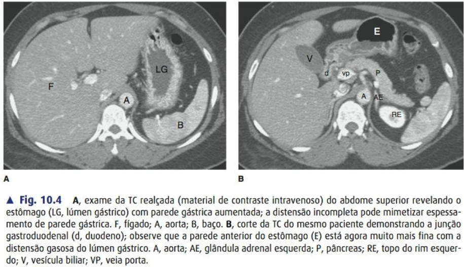
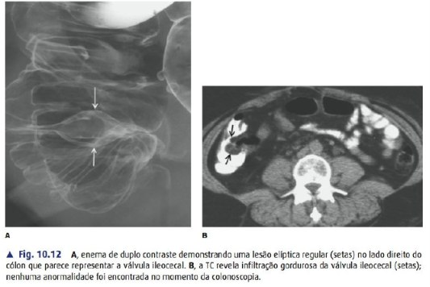

O que é uma TC (e por que ela é cinza)
A tomografia é uma máquina de raio-X que gira 360° em volta do paciente. Em vez de uma única foto "achatada" como no raio-X comum, o computador junta centenas de ângulos e reconstrói fatias do corpo — como se você cortasse um pão de forma e olhasse cada fatia por dentro.
Tipo criança: imagina uma câmera que dá voltas em você tirando mil fotos, e depois o computador cola tudo pra mostrar você "fatiado", igual pão.Cada pontinho da imagem (pixel) recebe um número que mede o quanto aquele tecido barrou o raio-X. Tecido que barra muito (osso) fica branco. Tecido que deixa passar quase tudo (ar) fica preto. O resto é escala de cinza no meio.
Orientação: de que lado você está olhando?
Este é o erro nº1 de quem começa. A fatia (corte axial) é vista de baixo pra cima, como se você estivesse nos pés do paciente olhando na direção da cabeça dele. Consequência:
- A direita do paciente aparece na SUA esquerda (e vice-versa).
- O que está em cima na tela = anterior (barriga/peito).
- O que está embaixo na tela = posterior (costas/coluna). A coluna é seu ponto de referência que nunca falha — está sempre embaixo, no meio.
Os 3 planos de corte
A mesma TC pode ser "remontada" em três direções. Você vai usar principalmente o axial, mas coronal e sagital ajudam a entender relações de altura e profundidade.
A escala de densidade (Unidades Hounsfield)
Aquele número de cada pixel tem nome: Unidade Hounsfield (UH). É a régua que define o cinza. Foi calibrada assim: água = 0, ar = −1000, osso denso = +1000. Todo o resto se encaixa nessa régua. Decorar essa escala é literalmente aprender a "ler cor" na TC.
| Tecido | UH aproximado | Como aparece |
|---|---|---|
| Ar (pulmão, alça intestinal) | −1000 a −800 | Preto total |
| Gordura | −100 a −50 | Cinza bem escuro |
| Água / bile / urina / líquido | 0 (−10 a +15) | Cinza escuro |
| Músculo / vísceras / partes moles | +20 a +50 | Cinza médio |
| Sangue agudo (coágulo fresco) | +50 a +80 | Cinza claro (brilha!) |
| Osso / cálcio / contraste / metal | +300 a +3000 | Branco |
Janelas (windows): a mesma imagem, olhares diferentes
O olho humano só distingue ~20 tons de cinza, mas a TC tem ~2000 valores. A janela é um "zoom de brilho/contraste" que escolhe qual faixa da régua você quer enxergar bem. A imagem é a mesma — muda só o que fica visível. Por isma que o mesmo exame é aberto em várias janelas.
Tipo criança: é como ajustar o brilho da TV pra enxergar o que estava muito escuro ou muito claro. A cena não muda, só o ajuste.| Janela | Serve para ver | Regra prática |
|---|---|---|
| Partes moles / mediastinal | Órgãos, vasos, músculos, coleções, sangue | Sua janela padrão no abdome |
| Pulmonar | Parênquima do pulmão, nódulos, pneumotórax | Tudo fica preto e branco de alto contraste |
| Óssea | Fraturas, cortical, lesões ósseas | Osso branco nítido, resto some |

Contraste: com ou sem, e por quê
O contraste iodado endovenoso é um líquido que fica branco na TC e circula pelo sangue. Ele "pinta" os vasos e os órgãos conforme o sangue chega neles. Serve pra: ver vasos, ver se um órgão está bem perfundido, destacar tumores, achar sangramento ativo e abscessos.
Tipo criança: é uma tinta que anda no sangue e acende de branco tudo por onde o sangue passa, ajudando a ver o que estava escondido no cinza.As fases (o timing importa muito)
- Sem contraste (fase simples): boa pra ver cálculo (rim, ureter), sangramento agudo (que já é branco sozinho) e calcificações. Trauma de crânio e cólica renal geralmente começam sem contraste.
- Arterial: artérias acesas. Ideal pra aneurisma, dissecção, sangramento arterial ativo e caracterizar tumores hipervasculares (ex.: hepatocarcinoma). → pra vascular, essa é a sua fase.
- Portal / venosa: fígado e vísceras no pico de realce. É a fase mais usada no abdome agudo geral e pra ver a maioria das lesões e coleções.
- Tardia / excretora: contraste já foi filtrado pro rim e vias urinárias. Serve pra ver ureter, bexiga e vazamento urinário.
O método: como olhar sem se perder
Nunca olhe uma TC "no geral". Todo mundo que lê bem segue sempre a mesma sequência, órgão por órgão, pra não pular nada. Um roteiro simples pro abdome:
Sinal de inflamação que você VAI usar direto: a gordura normal é preta e homogênea. Quando um órgão inflama (apêndice, diverticulite, colecistite), a gordura ao redor fica com listras/borramento cinza — chamamos de "densificação da gordura" ou fat stranding. Ache o órgão mais "sujo" ao redor e você achou o foco.
Tipo criança: gordura saudável é um fundo pretinho liso. Quando algo inflama do lado, fica tudo embaçado e riscado, como fumaça — e a fumaça aponta pro problema.Anatomia normal — um corte do abdome pra guardar
Vale ter na cabeça um corte "de referência" na altura do fígado / hilo hepático. Se você souber onde cada coisa fica nesse nível, reconhece o resto por vizinhança.

Pontos de referência que quase nunca mudam:
- Fígado grande, ocupa a direita do paciente (esquerda da tela).
- Baço pequeno, atrás/lateral à esquerda do paciente (direita da tela).
- Aorta (redonda, à esquerda) e veia cava (ovalada, à direita) sentadas na frente da coluna.
- Rins atrás (retroperitônio), um de cada lado da coluna.
- Pâncreas atravessado no meio, atrás do estômago — o mais "escondido", olhe com atenção.
Pontos de referência & macetes pra caçar cada estrutura
Saber onde o órgão fica é metade. A outra metade é ter um truque pra achá-lo rápido rolando as fatias. Estes são os que funcionam no plantão.
1. A coluna é sua régua (níveis vertebrais)
O corpo vertebral não é só âncora de baixo — ele te diz a altura e prevê o que aparece ali.
2. Aorta × Cava — nunca mais confunda
- Aorta: redonda, parede grossa, à esquerda da coluna, calibre constante. Brilha primeiro na fase arterial.
- VCI: ovalada/em gota, parede fina, à direita, muda de formato a cada fatia. Brilha mais na fase venosa.
3. Ache o órgão seguindo o vaso dele
- Tronco celíaco: 1º ramo anterior abaixo do diafragma; abre num "Y" que parece uma gaivota (esplênica → esquerda, hepática comum → direita). "seagull sign".
- AMS: próximo ramo anterior, cercado de gordura, com a VMS do lado direito. VMS à esquerda da AMS → suspeite de má-rotação.
4. Macete por órgão "chato de achar"
| Órgão | Como caçar |
|---|---|
| Pâncreas | Siga a veia esplênica — ela corre colada atrás do corpo/cauda, como uma sombra. Achou a esplênica, o pâncreas está na frente. Nível ~L1. |
| Adrenais | Formato de "Y"/setinha. Direita atrás da VCI; esquerda anteromedial ao polo superior do rim esquerdo. |
| Vesícula | Saco escuro na borda inferior do fígado. A linha vesícula→VCI (Cantlie) divide fígado direito × esquerdo. |
| Apêndice | Ache o ceco e desça; base logo abaixo da válvula ileocecal (siga o íleo terminal entrando no ceco). |
| Rins | Retroperitônio, L1–L3. O direito é mais baixo (empurrado pelo fígado). |
| Baço | Póstero-lateral esquerdo, sob o diafragma. Normal não cruza a linha média nem passa muito das costelas. |
5. Delgado × cólon (que alça é essa?)
- Delgado: central, pregas finas (válvulas coniventes) que atravessam toda a luz. Jejuno no QSE, íleo no QID.
- Cólon: na periferia (emoldura o abdome), haustrações que NÃO cruzam a luz toda, com ar/fezes dentro.
Os "não pode perder" do cirurgião
Você não precisa laudar como radiologista — mas tem que reconhecer o que muda a conduta na hora. Estes são os achados que o cirurgião não pode deixar passar:
💨 Pneumoperitônio (ar livre = perfuração)
Bolha de ar preta fora da alça intestinal — geralmente subindo pra frente, abaixo da parede abdominal ou perto do fígado. Significa víscera oca perfurada até prova em contrário → abdome cirúrgico. Procure na janela pulmonar, que realça o ar.
🩸 Líquido livre / hemoperitônio
Coleção nas goteiras parietocólicas, ao redor do fígado/baço e na pelve. Escuro (~0 UH) = líquido simples. Claro (+45-80 UH) = sangue. No trauma, sangue claro perto de um órgão = provável lesão daquele órgão.
🔴 Apendicite
Apêndice espessado (>6 mm), sem preenchimento, com gordura borrada em volta (fat stranding) na fossa ilíaca direita. Pode ter apendicolito (pedrinha branca) e líquido. Se tiver ar/coleção ao redor → perfurou.
🌀 Obstrução intestinal
Alças dilatadas cheias de líquido/ar antes de um ponto, e alças murchas depois. Esse "ponto de transição" é onde está a causa. Delgado dilatado > 3 cm, cólon > 6 cm são os limites clássicos.
🫧 Abscesso / coleção
Coleção com parede que realça com contraste (anel branco em volta) e centro líquido/escuro. Se tiver bolinhas de ar dentro, forte suspeita de infecção/abscesso.
🫀 Aorta: aneurisma / dissecção (foco vascular)
Aorta dilatada (>3 cm na abdominal) = aneurisma. Uma linha (flap) dentro da luz separando dois canais na fase arterial = dissecção. Contraste que vaza pra fora da parede = ruptura → emergência.
Casos reais — treine o olho no exame de verdade

Os esquemas acima são desenhos limpos pra você entender a lógica. Agora o pulo do gato é ver TC de verdade. Os botões abaixo abrem casos no Radiopaedia (gratuito), onde você rola a pilha inteira de fatias e pode ligar/desligar as legendas — muito melhor que uma imagem parada.
Como usar: abra o caso, role as fatias de cima pra baixo tentando achar o achado sozinho antes de ler o laudo. Depois compare com o esquema aqui do arquivo.Resumo de bolso — 7 verdades
- 1. Branco = denso (osso, contraste, sangue). Preto = ar. Cinza = o meio.
- 2. Direita do paciente na sua esquerda. Coluna sempre embaixo.
- 3. A régua é a UH: ar −1000, água 0, osso +1000.
- 4. Sangue agudo é CLARO; líquido simples é ESCURO. Na dúvida, meça a UH.
- 5. Troque de janela: partes moles (padrão), pulmão (ar/pneumo), osso (fratura).
- 6. Contraste: arterial pra vaso/sangramento, portal pro abdome geral, simples pra pedra.
- 7. Leia sempre na mesma ordem, órgão por órgão. Gordura "suja" aponta o foco.